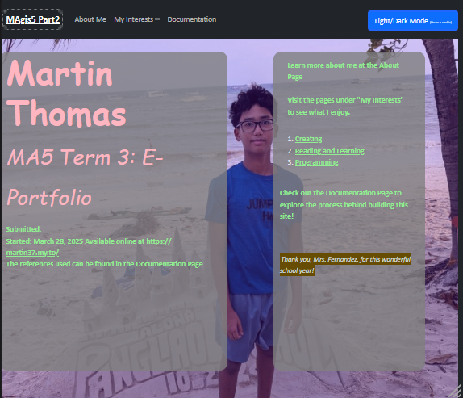
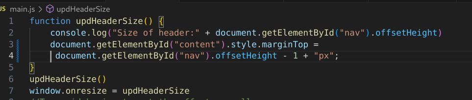
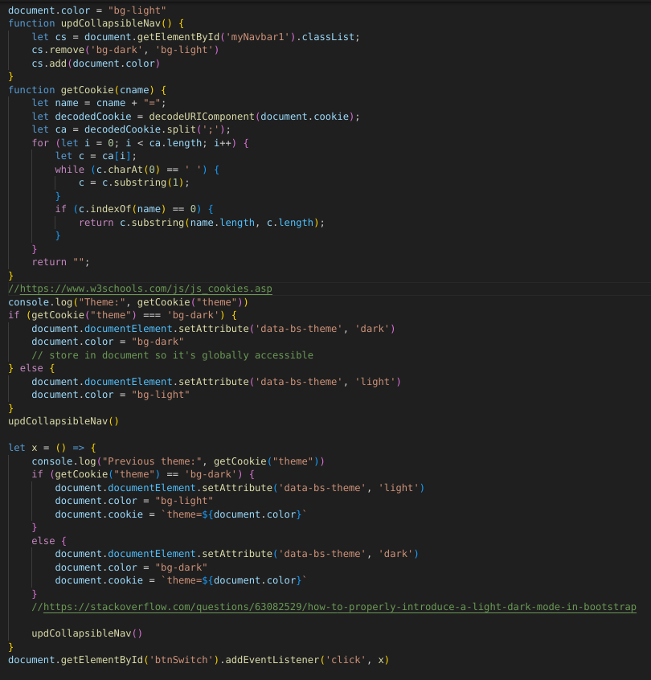
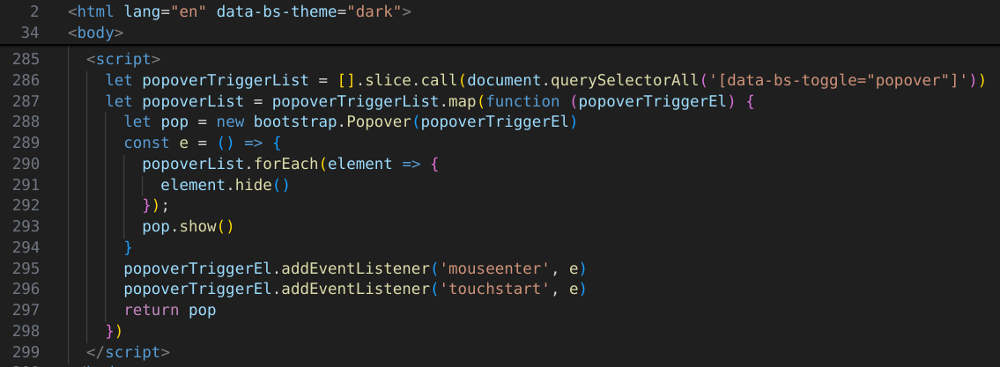
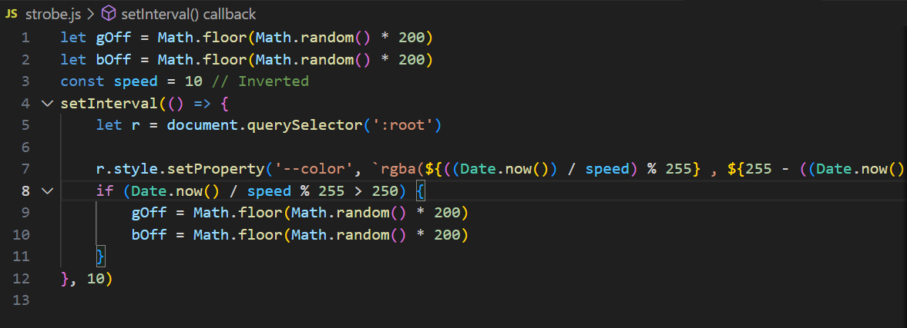

Documentation
Goals (1 pt)
In a paragraph, clearly state the purpose of your website, your target audience and your key goals incorporated in the site such as skills, talents, and accomplishments.
The purpose of my website is to serve as a way for people to get to know me better and as a way to organize my intests and projects. The website's target audience is anyone who wants to get to know me better. The key goals for this project are:
- Create a accesible, engaging, and easy-to-use website
- Express myself and my interests clearly
- Follow the ten web design principles
Homepage Design (3 pts)
Include screenshot/s of your home page and explain the content structure and arrangement of your essential subpages/menus and other properties in not more than three (3) sentences.
A transparant, color-changing mask in overlayed on a background image of myself with text written on top. The text is layed over a semi-transparent gray mask in order to make the text more easily readible. Bootstrap typography classes and HTML elements such as .display-1, h1, mark, ol, and small are used to style the text on both sides, with the left side containing essential information and the right side describing the different pages in my site.
Interest Page 1 Design (3 pts)
Include screenshot/s of your first Interest Page and state a general description of the page in not more than three (3) sentences.
The first interest page has a css linear background and typing animation for the header, and includes two images, an introduction, and the five sentence reflection. The images refer to the objects mentioned in the introduction - an origami chair and a 3d printer. The introduction describes how exactly I expressed my interest in creating things while the reflection illustrates its impact on my growth.
Interest Page 2 Design (3 pts)
Include screenshot/s of your second Interest Page and state a general description of the page in not more than three (3) sentences.
Similar to the first, the second interest page has a css linear background and typing animation for the header,and includes two
images, an introduction, and the five sentence reflection. There are color-changing borders on the images and
reflection. The images are placed within <figure> tags and are given subtitles.
Interest Page 3 Design (0 pts??)
Include screenshot/s of your third Interest Page and state a general description of the page in not more than
three (3) sentences....
Wait...
Javascript Explaination (NaN pt/s?!)
This isn't- OH NO!

This code automatically offsets the page by the height of the navigation bar so that the top of the header
doesn't get cut off.

This code updates the theme when the button is pressed and stores the user's preference in a cookie.

This code opens the popups in the Programming Page when they are hovered over
and closes them automatically.

This code stores a color in the CSS variable --color. The color is dependent on time in order to produce a smooth transition effect and is randomized every once in a while.
References (undefined PT/S!!?!)
throw new EvalError("HELP! T-");
Many pages from:
https://developer.mozilla.org/en-US/docs/
https://www.joshwcomeau.com/css/center-a-div/
Many pages from: https://www.w3schools.com/
Many pages from:
https://getbootstrap.com/docs/5.0/getting-started/introduction/
https://www.fabricsandpapers.com/blog/grey-colour-schemes
https://stackoverflow.com/questions/63082529/how-to-properly-introduce-a-light-dark-mode-in-bootstrap
https://cssgradient.io